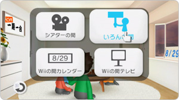
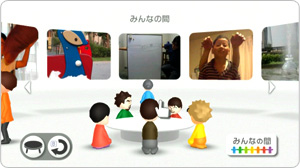
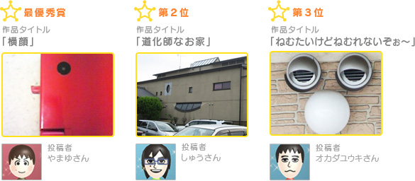
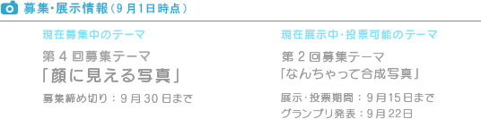

『Wiiの間』の観葉植物、もしくは右下の移動アイコン上でAボタンを押すと、「いろんな間」に入れます。いろんなMiiがパレードをしている中で、「みんなの間」のプラカードを持ったMiiを選択してみましょう。

この「みんなの間」では、「顔に見える写真」や「おいしそうな写真」といったテーマで、作品の投稿を募集しています。特に優秀な作品は「みんなの間」で紹介され、さらにその中から『Wiiの間』ユーザーの投票でグランプリ作品が決定されます。
グランプリに輝くと、作者のMiiは「みんなの間」の主催になることができます。主催になったMiiは、「いろんな間」のパレードに「みんなの間」のプラカードを持って参加することができます。また「みんなの間」で紹介された優秀作品の作者全員に、自分のMiiのスタンプが贈られます。

9月15日までの「みんなの間」では、「なんちゃって合成写真」の優秀作品を紹介しています。どれも楽しい作品ばかりですが、9月22日には、この中からグランプリが決定されます！
また、現在募集中のテーマは「顔に見える写真」(※)です。締め切りは9月30日まで。優秀作品、そしてグランプリを目指して、ふるってご参加ください。
(※)＜お詫び＞…9月中に募集しているテーマが「おいしそうな写真」となっておりましたが、正しくは「顔に見える写真」でした。お詫びして訂正いたします。(9/22)

